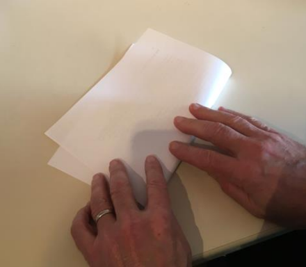
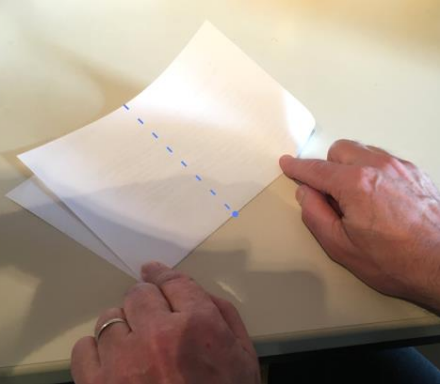
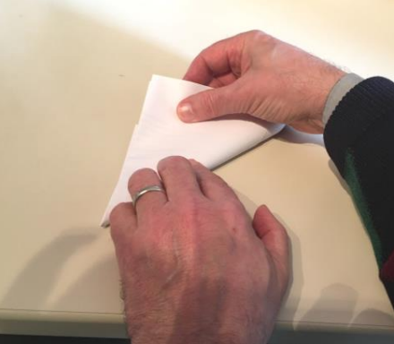
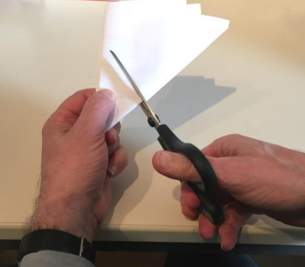

Mathe Experiment: Falten und Schneiden!
Willkommen zu einem spannenden Experiment, das du ganz einfach zu Hause machen kannst! Heute wirst du mit einem Blatt Papier experimentieren und dabei eine interessante Form erstellen, indem du es faltest und schneidest. Viel Spaß beim Ausprobieren!
Was du brauchst:
- Ein Blatt Papier (z. B. DIN A4)
- Eine Schere
So geht’s:
1. Nimm das Blatt Papier und falte es entlang einer geraden Linie ungefähr in der Mitte.

2. Suche nun einen Punkt, der ungefähr in der Mitte der Faltkante liegt und falte das Papier
noch einmal, und zwar senkrecht zur ersten Faltrichtung, so dass die Falte durch den Punkt geht.

3. Jetzt falte das Papier ein weiteres Mal, und zwar so, dass der Winkel, den die beiden ersten
Faltkanten einschließen, halbiert wird.

4. Jetzt kannst du das Papier mit der Schere schräg durchschneiden. Achte darauf, dass an der
dicken Kante nur ein kurzes Stück bis zur Spitze bleibt.

5. Jetzt kannst du das Blatt auffalten und schauen, was herausgekommen ist. Überraschung! Du
wirst ein interessantes Muster entdecken.
Zum Weiterexperimentieren:
Versuche nun, das Experiment noch ein wenig zu variieren:
- Schneide das Papier in einem anderen Winkel. Was erhältst du?
- Kannst du auch ein Quadrat erhalten?
- Bevor du schneidest, falte das Papier ein viertes Mal, so dass der Winkel an der Spitze noch einmal halbiert wird. Was ergibt sich jetzt?
Ergebnis des Experiments:
Schau dir die entstehenden Muster genau an. Was passiert, wenn du das Papier auf verschiedene Arten schneidest? Welches Muster findest du am interessantesten? Du hast sicher viel über Symmetrie und Formen gelernt!